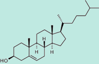
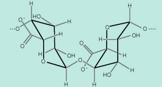

Unit 1: Biochemistry
Activity 1: Chemistry of Life
Assignment
 Assignment 1
Assignment 1
 Complete
the following assignment and submit your teacher.
Complete
the following assignment and submit your teacher.
Chemistry Questions
- Define the following: atomic mass, atomic number, isotopes, organic chemistry, molecules and compounds.
- Explain the terms: energy levels, orbitals and valence electrons
- Using electron dot diagrams, describe the difference between a covalent bond, ionic bond, and polar covalent bond.
- Give the electron dot diagram for N, O, S, H2O, and methane.
- Describe intermolecular forces and compare this to intramolecular forces.
- Define electronegativity and polarity. How do these affect covalent bonding?
- Using the term, electronegativity and polarity, explain a hydrogen bond.
- Explain why water is considered the universal solvent?
 Resources
Resources
The following resources as well as the internet may be used to complete the above assignment.
Assignment 2
Complete the following assignment and submit your work your teacher.
Functional Groups
- For the following molecules, circle/draw out and name the functional groups
a) Glucose
b) cholesterol (lipid)
 c) pectin (polymer)
 d) tetracycline (antibiotic)

- Explain the difference between a hydrocarbon in a ring structure and that of an aromatic compound.
- Explain why a functional group would increase the solubility of a molecule in water.
- Explain the terms monomer and polymer. Give two examples
of synthetic and natural polymers and give their monomers.
Assignment 3
Complete the following assignment and submit your work your teacher.
Reactions
Identify the following types of reactions. Name and circle/draw out the functional groups.
| 1. | |
| 2. | |
| 3. | |
| 4. | |
| 5. |
Assignment 4
Complete the following assignment and submit your work your teacher.
Biological Molecules
- What functional groups come together when a glycerol connects to a fatty acid?
- Distinguish between a saturated and unsaturated fatty acid. Why do polyunsaturated fatty acids tend to be liquids at room temperature?
- Give the biological functions of steroids, proteins, and triglycerides.
- What functional groups do all amino acids have in common?
- Distinguish between a protein and a polypeptide.
- What is protein denaturation? What causes it?
- Egg whites are made from a protein called albumin. Describe the appearance of a raw egg and that of a cooked egg. Account for the difference in appearance before and after cooking.
- Distinguish between an oligosaccharide and a polysaccharide and give an example of each.
- Detergents are amphiphilic molecules. This means that one end likes water and the other end of the molecule hates water. Explain how detergents work.
- Distinguish between essential and nonessential amino acids. Why is it important to have a balanced diet in terms of protein?
- What type of bonds and forces hold protein structure together. Which is the strongest?
- What does the term like dissolves like mean?
- What is chitin and some of its uses?
Assignment 5
Complete the following assignment and submit your work to your teacher.
 Lab: Food Testing
Lab: Food Testing
This assignment involves completing a laboratory in which you will learn how to test for the presence of simple carbohydrates, complex carbohydrates, proteins, and lipids. Then you will get the opportunity to test various foods to check for the presence of these macromolecules.

|
Complete the Food Testing Lab. |
|---|

|
Before you begin the lab activity, please be sure to download the data sheet to record your observations. |
|---|
|
Style Sheet After finishing the lab activity, you will complete a formal lab report. Your lab report should follow the style sheet which you can find here. |
Discussion Questions
Answer the following questions and add them to the discussion section of your lab report.
- Write a purpose, procedure, and conclusion for this lab.
- Were there any results that surprised you?
- Look in your cupboard and refrigerator for the types of foods that were tested in the lab. Look at the nutrient labels for these foods. Do the labels confirm your test results? Explain your answer.
Rubric

|
View the rubric for this assignment. View the long description of the rubric for this assignment. |
|---|
Checklist
Your lab report should include the following:
Resources
The following resources may be used to complete the above assignments.
This is a disclaimer. External Resources will open in a new window. Not responsible
for external content.
Unless otherwise indicated, all images in this Activity are from the public domain
or are © clipart.com or Microsoft clipart and are used with permission.